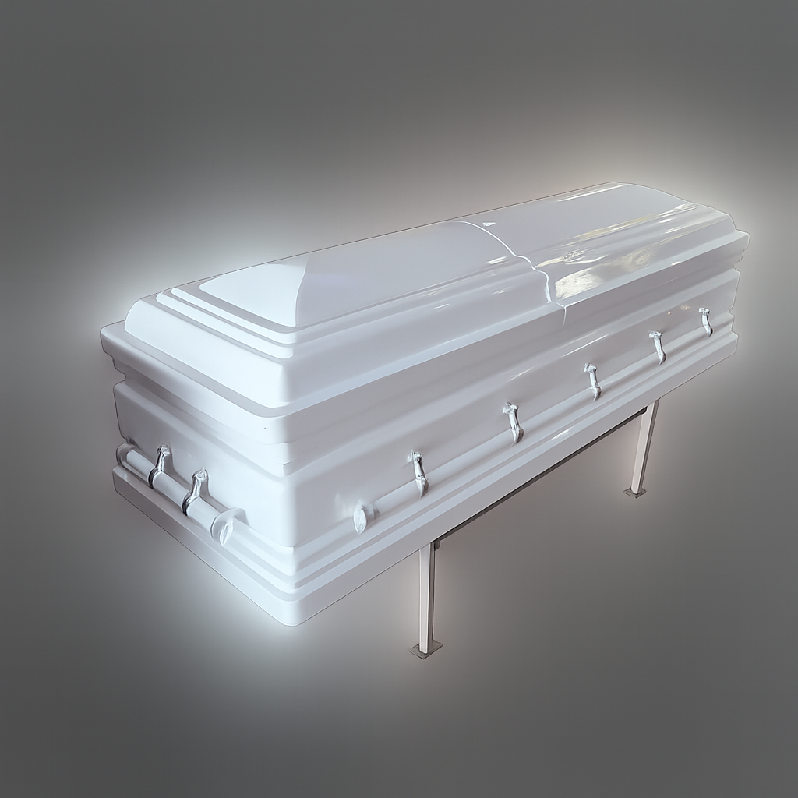
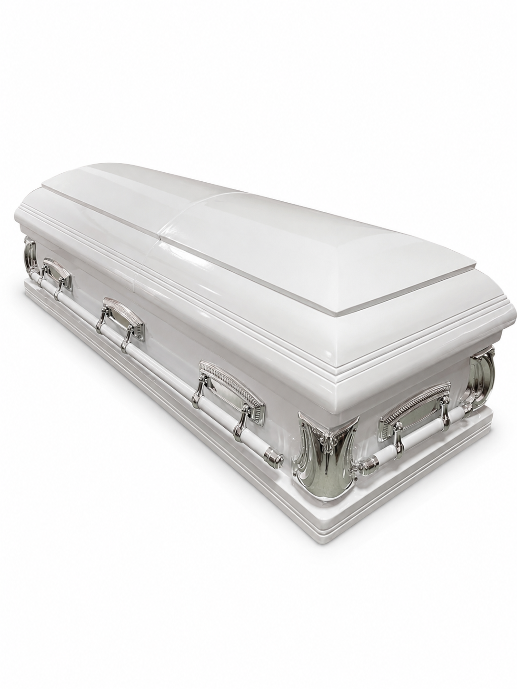
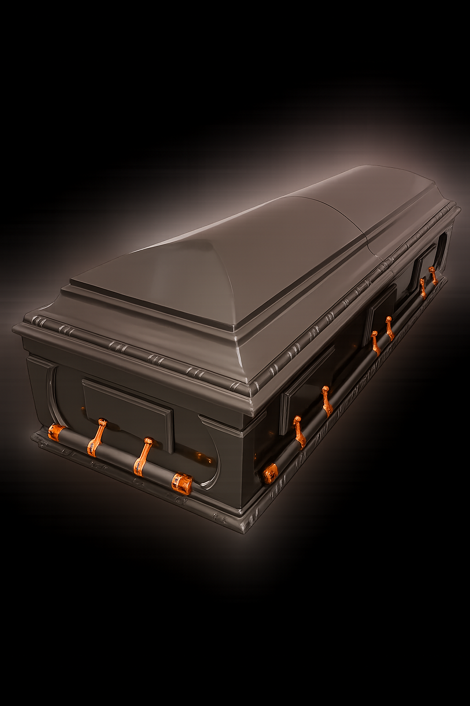

Caskets & Coffins
Premium Caskets & Coffins in Kenya
Discover one of Kenya's largest collections of beautifully crafted caskets and coffins. From affordable funeral coffins to luxury hardwood caskets and fully customised memorial designs, Perozie Funeral Services helps families honour every life with dignity and respect.
Gallery
Our Collection
A glimpse of the range available. Every casket and coffin is delivered clean, assembled, and ready for viewing.
Hardwood Caskets

White Funeral Coffins
Mahogany Caskets

Luxury Caskets

Modern Minimalist Coffins
Our Range
Caskets & Coffins for Every Family
From budget-conscious to fully bespoke, explore the full range we coordinate for families across Kenya.
Luxury Caskets
Premium finishes for families who want an exceptional final presentation.
- Premium finishes
- Brass hardware
- Velvet interiors
- Polished hardwoods
- Imported fittings
- Premium craftsmanship
Hardwood Caskets
Solid, durable, and elegant, sourced from Kenyan and imported timber.
- Mahogany
- Cypress
- Pine
- Mukau
- Meru Oak
- Camphor
- Cedar
Affordable Coffins
Budget-friendly options that still carry the dignity every family deserves.
- Simple veneer finishes
- Standard sizes usually available within a day
- Quality maintained at every price point
Imported Caskets
An exclusive imported collection with luxury interiors, for families who want an international presentation.
- Imported hardwoods and finishes
- Luxury upholstered interiors
- Limited, premium lines
Modern Coffins
Sleek, minimalist designs for families who prefer a contemporary aesthetic.
- Clean lines
- Understated hardware
- Contemporary finishes
Traditional Coffins
Classic Kenyan funeral styles, tapered and six-sided, the most familiar shape for local services.
- Traditional tapered shape
- Classic finishes
- Widely available
Children's Caskets
Smaller sizes with soft interiors and gentle, elegant finishes.
- Soft interiors
- Gentle, elegant finishes
- Sized appropriately with care
Oversized Caskets
Extra width and reinforced construction for families who need additional room.
- Extra width
- Reinforced construction
- Sized on request
Eco-Friendly Coffins
Environmentally responsible options for families who want a lighter footprint.
- Biodegradable materials
- Sustainably sourced where possible
- A simpler, natural finish
Materials
Materials
A choice of hardwoods and finishes for every preference and budget.
Interiors
Interior Finishes
What surrounds your loved one matters. Choose from a range of interior materials.
Finishes
Colours Available
Choose the finish that feels right, or ask about a custom colour to match a family preference.
Customisation
Personalised Caskets
Make it personal, with engravings, family crests, religious symbols, and more.
Sizing
Coffin Sizes
General guidance only, we confirm exact sizing with your family before delivery.
| Size | Guidance |
|---|---|
| Infant | For newborns and infants, with soft, gentle interiors. |
| Child | Sized for young children, elegant and appropriately scaled. |
| Teen | An intermediate size between child and standard adult. |
| Standard Adult | The most common size, suitable for the majority of adults. |
| Large Adult | Additional width and length for a taller or larger frame. |
| Oversized | Extra width and reinforced construction, made to order. |
Why Perozie
Why Choose Perozie Funeral Services
A casket and coffin service built around craftsmanship, choice, and compassion.
Quality Craftsmanship
Every casket and coffin is finished to a standard families can trust for such an important moment.
Local Manufacturing
Sourced from trusted Kenyan workshops, with standard sizes usually available within a day.
Imported Collections
A curated selection of imported caskets for families who want an international presentation.
Affordable Prices
Options at every price point, without compromising on dignity.
Luxury Finishes
Premium hardwoods, brass hardware, and upholstered interiors for a distinguished farewell.
Nationwide Delivery
Delivered and fitted, ready for viewing, anywhere in Kenya's 47 counties.
Custom Designs
Engravings, family crests, religious symbols, and bespoke interiors on request.
Compassionate Service
Coordinators who explain every option clearly, without pressure, at a difficult time.
Professional Advice
Guidance on materials, sizing, and finishes so you can choose with confidence.
24/7 Availability
Reachable day or night, including weekends and public holidays.
One Coordinated Plan
Complete Funeral Solutions
Caskets and coffins are rarely arranged alone. We coordinate everything else your family needs as one plan.
Coverage
Delivery Across Kenya
Caskets and coffins delivered and fitted nationwide, including:
And every other county across Kenya. Don't see your town listed? Call or WhatsApp us, we deliver nationwide.
Frequently asked questions
How much do coffins and caskets cost in Kenya?+
Prices vary widely by finish, from simple veneer coffins to solid hardwood, and from locally finished caskets to imported lines. We confirm a clear price once we know what you'd like, with no hidden charges added later.
What's the difference between a casket and a coffin?+
A coffin is the traditional tapered, six-sided shape most common in Kenya. A casket is rectangular, usually with a hinged lid and upholstered interior, a western-style, often premium option. We stock both.
Do you deliver nationwide?+
Yes, we deliver and fit caskets and coffins anywhere in Kenya's 47 counties, coordinated around your service date.
Can a casket be custom manufactured?+
Yes, we can arrange custom sizing, engravings, family crests, and bespoke interiors, coordinated with our workshop partners.
Do you offer payment plans?+
Payment is arranged directly with our coordinator when you book. Call or WhatsApp us to discuss what works for your situation.
What materials are available?+
Mahogany, pine, cypress, hardwood, MDF, veneer, oak, and imported timber, depending on the finish you choose.
Which hardwood should I choose?+
Mahogany and Meru Oak are popular premium choices, while pine and cypress offer a more affordable solid-wood option. We're happy to talk through what suits your budget and preference.
What are imported caskets like?+
Our imported collection features luxury interiors and international finishes, for families who want that specific presentation.
Do you have children's caskets?+
Yes, sized appropriately with soft interiors and gentle, elegant finishes.
Can you supply an oversized casket?+
Yes, oversized caskets with extra width and reinforced construction are available on request.
How quickly can a coffin be delivered?+
Standard sizes are usually available within a day. Custom or imported options may take longer, we confirm timing when you order.
Is nationwide availability guaranteed?+
Yes, we coordinate delivery to all 47 counties, arranging transport alongside the rest of your funeral plan if needed.
Do you offer full funeral packages?+
Yes, caskets and coffins can be bundled with hearse hire, flowers, and full funeral planning as one coordinated service.
Can a casket be engraved?+
Yes, custom engraving is available, including names, dates, bible verses, and religious symbols.
Are eco-friendly coffins available?+
Yes, we offer environmentally responsible options using biodegradable and sustainably sourced materials.
What colours are available?+
White, black, walnut, mahogany, oak, cherry, ivory, champagne, silver, gold, and custom colours on request.
What interior materials do you offer?+
White satin, velvet, silk, quilted interiors, embroidered pillows, and premium cushions, with matching interior sets available.
Do caskets come with a warranty?+
Manufacturing quality is guaranteed at the point of delivery. Speak to our coordinator about specific concerns for your order.
Do you sell memorial accessories?+
Yes, alongside caskets and coffins we can arrange memorial urns, funeral flowers, and other accessories as part of the same order.
How do I order a casket or coffin?+
Call, WhatsApp, or request a quote through this page. Let us know the style and budget you have in mind, and we'll confirm options and delivery.
What Families Say
“Hearse Kenya handled the transport with absolute professionalism. The GLS 550 was immaculate, my father received the send-off he deserved.”
Catherine M.
Westlands, Nairobi
“They coordinated everything from Mombasa to the graveside without a single issue. Prompt, respectful, and genuinely compassionate.”
David O.
Mombasa
“Arranging a funeral from the UK felt impossible until Hearse Kenya stepped in. They managed everything and kept us informed throughout.”
Jane K.
London, UK
Need a Casket or Coffin Today?
Our coordinators are available 24 hours a day. Call, WhatsApp, or request a quote and we'll confirm the details.